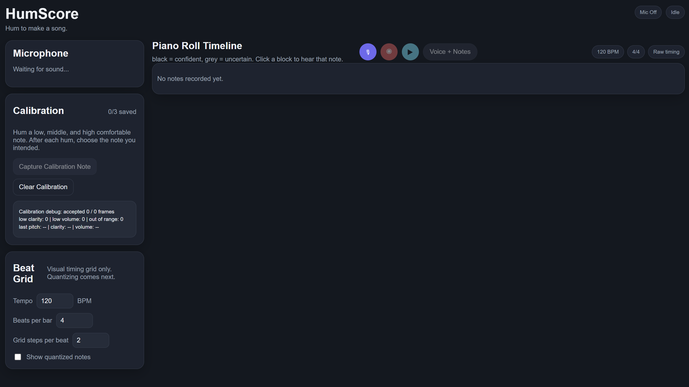

HumScore
A browser app that listens to humming, detects pitch, and maps it onto an editable piano-roll score.

Overview
While humming, I wondered if I could turn my humming into musical scores. Although I have not reached the scores part, HumScore features turning microphone input into musical notations, displaying them on a piano-roll common in midi apps. The recording can be played with or without original humming, and the process can be repeated. The current app focuses on monophonic humming: live pitch feedback, optional user calibration, recording, and a piano-roll timeline with rhythm controls (note: rhythm controls are yet to be completed).
What I Did
- Built the React/TypeScript UI and wired microphone capture through the Web Audio API.
- Integrated pitch detection (pitchy) with clarity/volume gates for live and recorded frames.
- Implemented calibration capture, user note confirmation, and cent-offset correction.
- Grouped pitch frames into note blocks with strong vs. uncertain confidence for the piano roll.
- Added synthesized playback and tempo/bar rhythm settings.
- Wrote unit tests around calibration, pitch processing, quantization, and note utilities.
Current Capabilities
- Input: Browser microphone via
getUserMediaanalyser FFT size 2048. - Live view: Shows corrected note name, raw note, frequency, cents, and clarity while listening.
- Calibration: Up to three saved reference notes; user picks intended pitch from given possible choices.
- Recording: Collects timestamped pitch frames and a WebM audio take; frames become note blocks on stop.
- Representation: Notes stored as MIDI/note labels with start, end, duration, and confidence on a piano-roll timeline.
- Playback: Replay generated tones alone, with the voice recording, or click individual blocks to hear each.
- Rhythm: Change tempo and beats per bar before playback.
Technical Approach
An AudioContext analyser feeds float time-domain samples to pitchy each animation frame.
Reliable frames during recording become PitchFrame samples; calibration applies stored
cent offsets before note naming. processPitchFrames merges consecutive frames on the
same pitch into NoteBlock segments, labeling short or noisy groups as uncertain.
Playback schedules simple synthesized notes via a separate audio context, optionally aligned to
quantized grid positions from tempo and steps-per-beat settings.
Challenge / What I Learned
Humming is messier than instrument audio: clarity and volume thresholds matter as much as the pitch algorithm. Separating calibration thresholds from recording thresholds, surfacing debug counts during calibration, and marking uncertain blocks made the piano roll honest about what the detector actually heard.